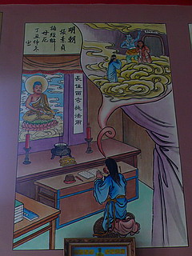

五穀先帝宮/苗栗縣竹南鎮
龍鳳宮からわずか数キロ、竹南の駅の近くにはもう一つ巨神像がある。
遠くに見えてきた巨神像。
神さまというより大魔神みたいだ。ってそれも神さまだっけか…
閑静な街に突如出現する巨神。
むむむ。何の神さまだ？
正面に回りこむとドーンと現れる赤ら顔の神さま。
しかも半裸。そしてメタボ腹。
このオッサン、じゃなくて神さまは一体何の神さまかというと五穀先帝、あるいは神農大帝といい、まあ、呼んで字の如く農業の神さまである。
参拝客が景気よく爆竹をかましてくれているので前庭は煙だらけ。
煙が晴れると右手に穀物を持った全身まっかっかのヒゲ親父の姿が明らかに。
神さまとしては飾り気のない姿だ。
この容姿で台湾の人々のハートをキャッチできるのだろうか？
五穀先帝像の前殿に入る。
この手の建物は前殿があってその後ろに巨神像、というパターンが多いのだろうか?
前殿メインはもちろん五穀先帝。
赤黒くて角の生えたおっさん、じゃなくて神さまである。
線香を売るおじさん。
このズルズルにリラックスしたおじさん（ときにはおばさん）も台湾の廟では標準装備と見た。
五穀先帝が台湾の道教の中でどのポジションにいて、どの位人気があるのかは判らないが、北部の桃園縣にも巨大な五穀先帝像があることを考えれば比較的人気のある神さまと考えられる。
廟内には様々な五穀先帝が祀られている。
特徴としては赤黒く恰幅の良い体、立派なヒゲ、オールバックに角、肩に架かった植物、そして右手に持った穀物。
よく見れば五穀豊穣を叶えてくれそうな福々しい容姿である。
ただし顔がサリーちゃんのパパみたいでチョット怖いが。
丁度、新しい神像を奉納しに来た方がいた。これも先程の祭壇に祀られるのだろう。
で、巨像の真下の後殿へ。こちらにもかなり立派な五穀先帝が祀られていた。
足元にいる二体の五穀先帝像は先程おばさんが抱えていたものと同じタイプのものだ。
二階へ上がる。
祭壇の中央には観音サマ。仏教界から道教界へとレンタル移籍した格好になっている。
梁には様々なイラストが描かれており、見ていて飽きない。

あの世で先に逝った姑に会いませんように～。て事？
おお、功徳箱（賽銭箱）が金庫じゃないっすか！これなら賽銭泥棒も尻尾を巻いて逃げていくことでしょう。
その外地母娘娘や天上聖母なども。
で、三階。
ここにはタイスタイルのお釈迦サマが祀られていた。
これも道教の神さま、ということなのだろうか？
気になったのが仏前（神前？）にあった紙の飾り物。
金紙とお札を織り交ぜたやけにゴージャスな供え物。
日本のタバコの空き箱で作った傘とは一線を画する本気具合である。
さあ、ココから上はいよいよ胎内空間だ！
と階段を上ろうとするもやっぱりココも閉鎖されており、先へは進めない。
どうしてこうも胎内巡りが封じられているのだろうか？
最初っから胎内巡りがない巨神像、というのならハナシはわかるが、わざわざ胎内空間を作っておいて一般に公開しないというのは何か特別な理由があるのだろうか？
日本において大仏の胎内巡りという行為は高村光雲が作った佐竹ヶ原の大仏を例に挙げるまでもなく、
｢見世物」から派生したレクリエーションと考えられる。
見世物の大仏からコンクリの聚楽園大仏、そして高崎観音、牛久大仏にいたる日本の近現代大仏史は常に胎内巡りと密接な関係を持っていた、いや、極論すれば胎内巡りこそが旧来と現代の大仏、大観音を分ける分水嶺といってもいいだろう。
その大仏大観音史観のキモの部分を封印されてしまった台湾の大仏、大神像はどこか空しく、しかしその一方で「実は胎内には道教の秘密の奥義が隠されているのでは？」との神秘性を感じさせているようにも思える。
階段は左右にあり、二方向の参拝路が設けられているようだ。
テラスに出ると五穀先帝のＭ字開脚が目の前に…うっぷっ。
民國80（1991）年に完成したこの巨大五穀先帝像、大きさは下の建物込みで約47メートル。
実際の像高はその半分位だろうか。
左右には眷属の皆さんがいらっしゃる。
団扇のようなモノを持った男女は風神雷神だと思うのだが、後は勉強不足で判りません。
いずれにせよ気象気候に関連する神さまかと思われる。
一度境内から外に出て背後を伺う。
五穀先帝が座っている岩山のような部分に3層分の窓が見える。
つまり厳密には胎内空間は無い模様。
これは神さま仏さまの中に入るなんて恐れ多い、という感覚の現れなのだろうか。
竹南駅のホームから見た五穀先帝像。
平凡この上ない町並みに光臨した巨大なクサビ。
その容姿と相まって強烈なインパクトだった。

これは彫刻なのか？建築なのか？巨大神像を鉄筋コンクリートで造って以来の永遠の命題である。
次の大仏へＧＯ！
台湾大佛列伝3